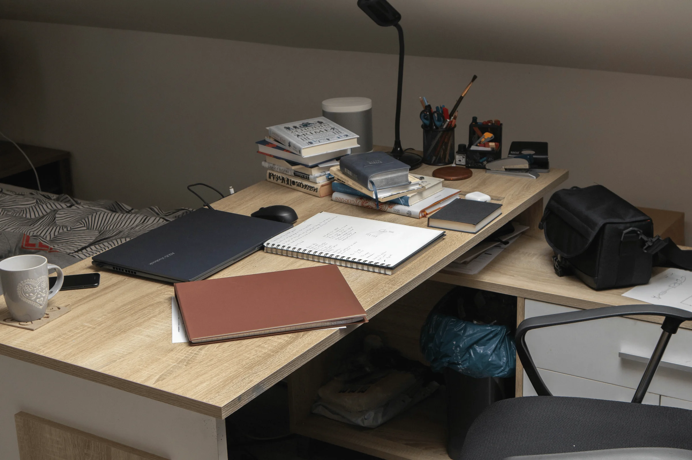
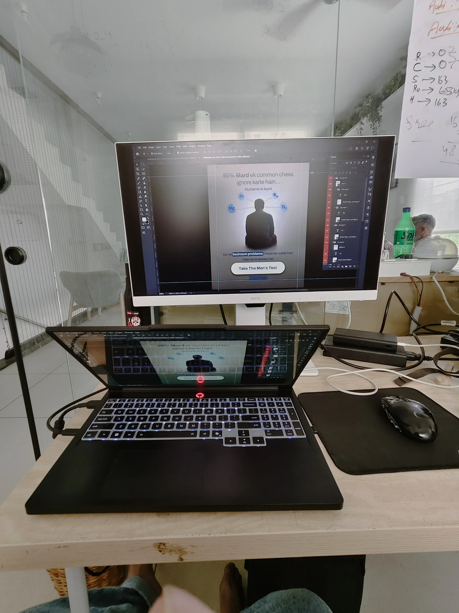
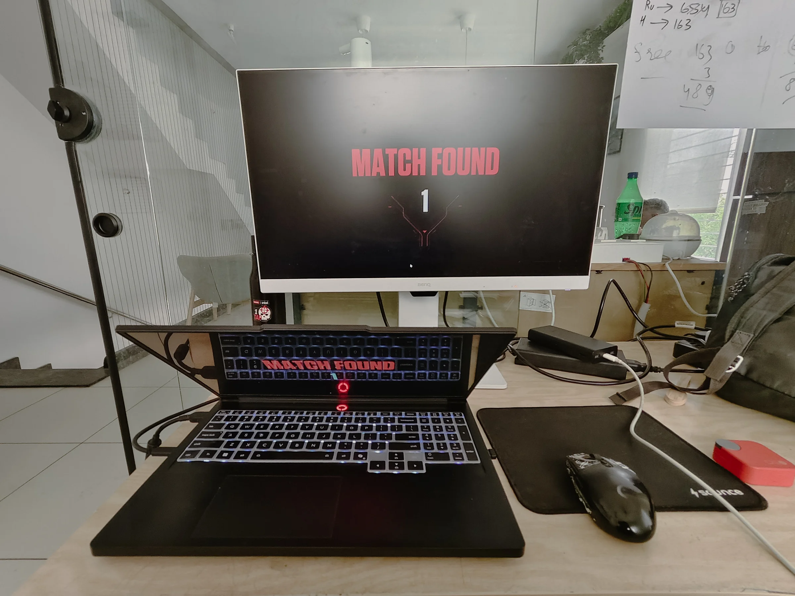
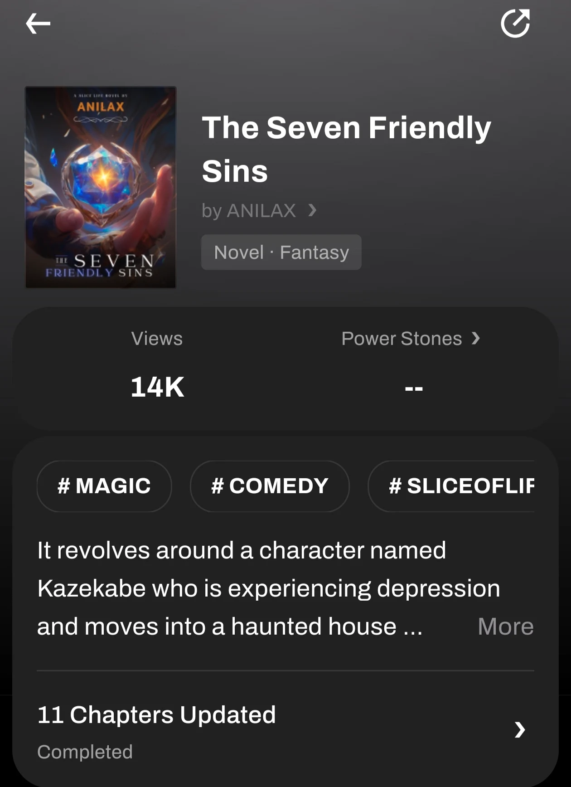
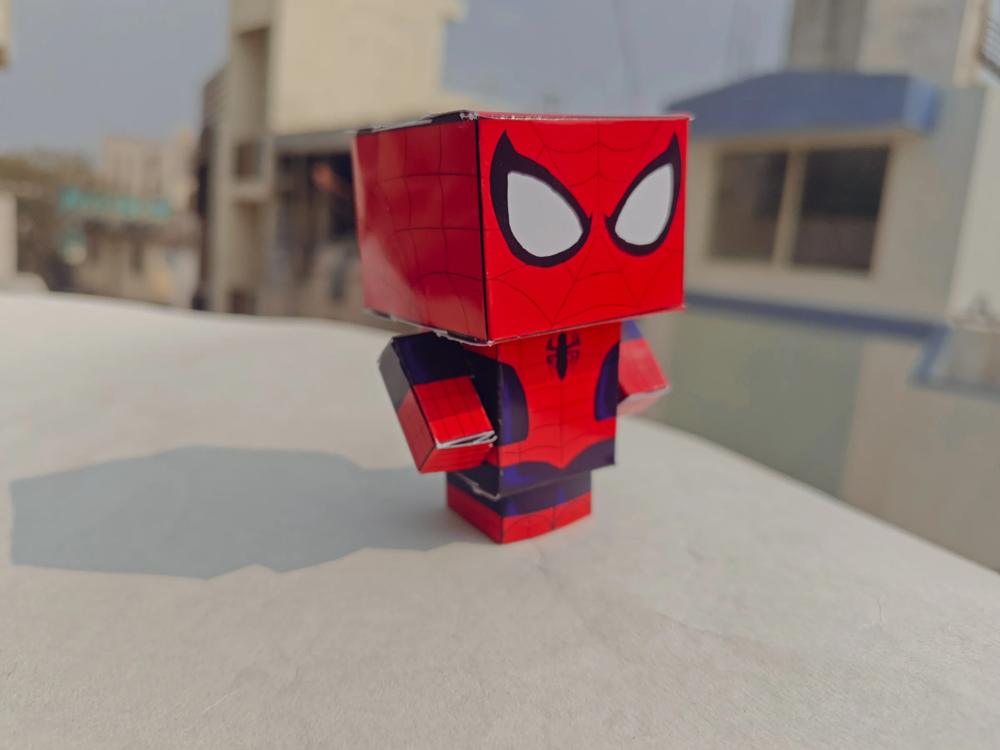
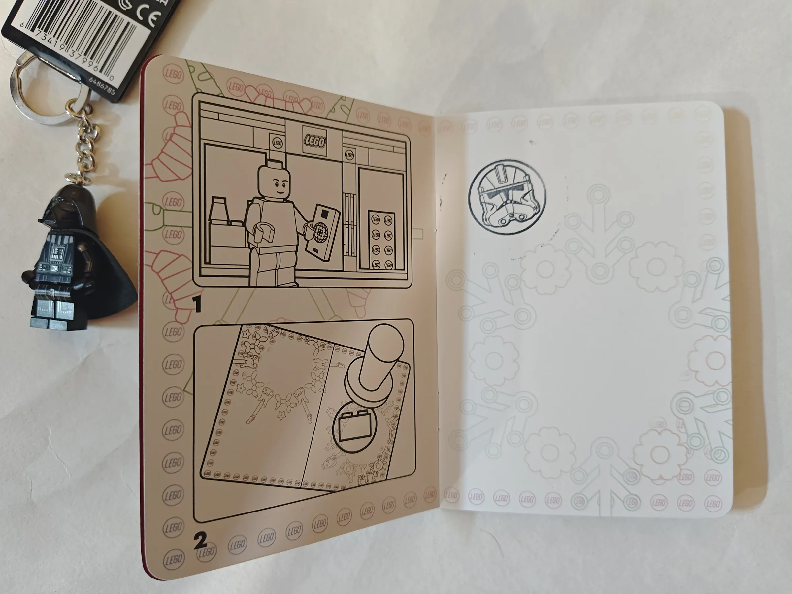
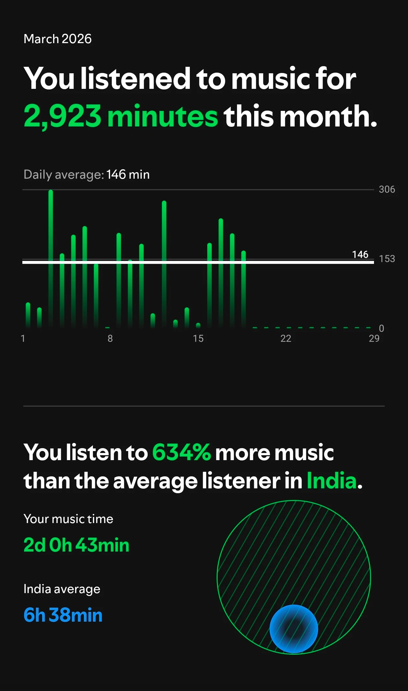

I started writing this thinking I’d write about hobbies. Then I sat there for a bit. And realized I don’t have hobbies. What I have is phases. Obsessions. Things I pick up, vanish into, drop, and come back to three months later like nothing happened.
March 21, 202610 min read↗
Read

No. 02 · Design Process
How I Actually Think While Designing (It’s Not That Deep… But Also It Is)
I used to think designing meant having a clear idea and then just making it. Now it feels more like wandering around in my own head, collecting random pieces, and somehow turning them into something that works.
March 21, 20268 min read↗
Read
No. 01 · Internship Life
One Day in RaazMD, Somewhere Between Tea and Deadlines 🦖
I like to believe my day starts at 7. In reality, it starts somewhere between 7 and “okay fine, I’m awake now.” First thing is tea. Always.
March 20, 20266 min read↗
Read
I used to think designing meant having a clear idea and then just making it. Now it feels more like wandering around in my own head, collecting random pieces, and somehow turning them into something that works. Not always clean. Not always logical. But it gets there.
It Usually Starts With “Wait… What Am I Even Doing?”
Before I touch anything, I try to understand the actual project. What is this? Who’s it for? What’s the point of it existing? If I skip this part, everything after just feels off, like something that looks fine but doesn’t mean anything. So I sit with it for a bit. No design yet. Just thinking.
Then Research. But Not the Pretty Kind Yet.
I don’t jump straight to design inspiration. I try to understand the topic first, the context, the space, the people it’s for. I’ve noticed that if I skip this, I end up making something that looks nice but feels empty. The visual stuff comes after. Not before.
Sometimes an Idea Shows Up Early
When that happens, I don’t question it too much. I just open my tool and make something quickly, 5 to 10 minutes, nothing serious. It’s usually messy. Half-formed. Slightly ugly. But it helps. It gives shape to something before it disappears.
My Brain Is Basically a Collection of Random References
I don’t just pull inspiration from design websites. It’s kind of everywhere. Movies. Anime. Manga. Comics. Random magazines I found somewhere and decided to buy for no real reason. Sometimes it’s just a colour from a scene. Sometimes a layout from a panel. Sometimes just a feeling I want to capture.
I like that part a lot. It makes design feel less like “following rules” and more like connecting things that shouldn’t normally connect.

The actual office setup. Photoshop open, something half-done on screen. This is mostly what it looks like.
The Scroll Phase (Where I Go Slightly Insane)
I already spend a lot of time looking at design work even when I’m not working on anything. So when I actually need inspiration it’s not “where do I go?”, it’s more “which rabbit hole today?”
I don’t go there to copy anything. I just scroll. Sometimes I find exactly what I need. Sometimes I find something completely unrelated that helps anyway. And even when nothing clicks, I at least know where to look next time.
For actual photos I can use in projects, Unsplash is my most-used resource by far. It’s copyright-free, the quality is good, and it saves a lot of time when you need something real-looking without having to shoot it yourself. The hero image on this post is from there.
Back to Design. Now Slightly Less Confused.
After all that, I go back and actually start designing. Trying things. Deleting things. Bringing them back like I didn’t just delete them two minutes ago. A lot of trial and error. A lot of “this looks right… wait no it doesn’t.”
I Overthink Small Things Way Too Much
Sometimes I’ll spend way too long on tiny details, colours not feeling exactly right, spacing being slightly off, thinking something could be just a bit better. And then suddenly it’s been hours.
For context: this website has 16 themes because I couldn’t pick one. Yeah. That happened. And they all actually work. Click any of them right now:
All 16 themes. I built them instead of picking one. Click any square, the whole page updates live.
Feedback From Everyone, Not Just Designers
At some point I show the work to people. Friends, colleagues, teachers. And not just designers. Designers will notice precision. Non-designers will notice confusion. Both matter. We’re not designing for designers at the end of the day.
Sometimes I’m Not Satisfied. So I Keep Going.
Even if something is “good enough,” sometimes it just doesn’t feel right. So I try again. Or tweak it. Or rethink it. Not always possible when deadlines exist, but when I can, I push it a bit more.
I Also Take Projects I Don’t Fully Understand. On Purpose.
Because I like learning while working. This website is one of those projects. I didn’t know everything when I started. I just kept learning and adding things as I went. There’s a whole story there, but that’s for another post.
Tools
Figma and Photoshop mostly. Both, depending on what the work needs, UI and layout in Figma, compositing and image work in Photoshop. Illustrator when something needs to be vector. After Effects when there’s motion involved.
Outside of those, notes and sketches when an idea shows up before a screen does. And a lot of walking, walking is genuinely a tool at this point. I can’t sit still and think at the same time.
AI image generation comes up occasionally too. Mostly as a reference or starting point, to quickly visualise a direction before committing to it. Not as a final output. But pretending it doesn’t exist would be dishonest, so there it is.
The Playlist
Music is always there. I don’t think I’ve ever designed in silence. This is the main one, around 112 hours. I don’t even open my liked songs anymore because if this playlist is 112 hours, I genuinely don’t want to know how big that one is.
Designing, for me, isn’t a clean process. It’s a mix of understanding, random inspiration, too much scrolling, small frustrations, tiny wins, feedback, and a lot of music.
Some logic. Some instinct. And occasionally, walking around like a confused design dinosaur trying to solve problems that didn’t exist five minutes ago 🦖
But somehow… it works. And I’m okay with that.
I like to believe my day starts at 7. In reality, it starts somewhere between 7 and “okay fine, I’m awake now.”
First thing is tea. Always. Around 7:30. It’s less of a habit and more of a system requirement at this point. Without it, nothing really boots up properly.
Mornings are a bit inconsistent, honestly. Some days I eat breakfast at home like a responsible person. Other days… I just don’t have the energy. On those days, I either grab something on the way to the metro or just accept my fate and leave hungry.
By 9:15, I’m out. Slightly rushed, slightly late, but still within acceptable limits.
The walk to the metro is where my brain starts doing its thing. Music is already playing. It’s always playing. I don’t think I’ve designed anything in silence in a very long time. Walking + music = thinking mode unlocked.
Sometimes I’m thinking about work. Sometimes about random ideas. Sometimes I’m just walking with dramatic background music like I’m the main character in a very low-budget film.
I reach the office around 10.
10:30 is stand-up. Quick, simple, no drama. Just what we did, what we’re doing, what exists, what doesn’t.
Now here’s the thing.
If I didn’t eat anything in the morning, this is the moment where my body starts negotiating aggressively. Like, suddenly nothing matters except food.
So either I’ve already survived on something from the road… or I look at my colleagues and it’s kind of an unspoken agreement.
“Yeah, we should go eat.”
And I go with them. Immediately. No hesitation. Survival first, design later.
Work starts properly after that.
I can’t really go into full detail about everything we do, but it’s a sexual health startup, which makes things interesting in a way I didn’t expect. A lot of it is about how you communicate things clearly without making it awkward or clinical or boring.
Design actually matters a lot more here than I thought it would.
But the bigger thing is the people.
I’ve been thinking about this a lot. I’m learning from everyone. Not in a big, dramatic “mentor changed my life” way. It’s smaller than that. Someone’s workflow. Someone’s feedback style. Someone’s way of thinking about users.
It’s like collecting small pieces from everyone and slowly building your own version of how to work.
And weirdly, there’s no one I feel like I can’t learn from. That’s… rare, I think.
Somewhere in between, lunch happens.
There’s no strict timing. It just appears when it needs to. Sometimes it’s a proper break, sometimes it’s quick, sometimes it turns into random conversations that go way off track.
If I get stuck, I walk. A lot. I can’t sit still and think at the same time. So I just move around like a slightly confused but determined design dinosaur trying to solve layout problems 🦖
Music is still playing, by the way. Always.
And sometimes, not every day, but sometimes, around 4pm there’s a window. Work is caught up, the next task hasn’t landed yet, and someone just casually asks if anyone wants to play. It’s a startup. Things are a bit more flexible like that. Nobody makes a big deal of it. You just go, play a round or two, come back. It’s one of those small things that makes the environment feel a lot less stiff than I expected a “real job” to feel.

Same desk. Different energy. Around 4pm on a slow afternoon.
Around 6:30, we have another check-in.
It’s more of a wrap-up. What got done, what didn’t, what exists in a half-finished state.
After that, I finish whatever is left, mentally close all the open tabs in my head, and leave.
I reach home around 7:30 or 8.
That shift from work to home feels… nice. Quiet in a different way.
I talk to my parents, just normal conversations. Then dinner.
After that, I play games with friends, talk to people, just exist online for a bit.
And then comes my “me time.”
This part is very unstructured. I just… drift.
Scrolling Instagram, watching YouTube, sometimes anime, sometimes a random show, sometimes just lying there with music playing and doing absolutely nothing. It’s not planned. It’s not productive. It just happens.
And I think I need that.
Sleep, however… is a different story.
Never on time.
It’s always “just 10 more minutes,” which somehow turns into a whole extra hour. Or two.
In fact, I’m writing this at 3:57 AM. I have to wake up at 7.
So yeah, today will probably start the same way. Slightly tired, slightly chaotic, tea will fix everything (hopefully), and the cycle continues.
If I had to describe the whole day, it’s not perfect. It’s not overly productive every second.
It’s just a mix of routines, randomness, small learning moments, music constantly playing in the background, and trying to figure things out one day at a time.
Somewhere between tea, deadlines… and very questionable sleep decisions, it all kind of works.
I started writing this thinking I’d write about hobbies. Then I sat there for a bit. And realized I don’t really have hobbies. Not in the “I do this every Tuesday at 7 PM and I have a dedicated shelf for it” kind of way. What I have is phases. Obsessions. Things I pick up, vanish into, drop, and come back to three months later like nothing happened.
So this isn’t really a hobbies post. It’s more of a where does the time actually go post. Let’s find out together.
It Started With Collecting Things
When I was younger, I collected everything. Stamps. Coins. WWE cards. Cricket cards. Full binders, neatly arranged, flipped through like they were important documents.
Then Pokémon cards. Before it became what it is now. Before people were reselling packs for rent money. I just liked them. That habit never really left. It just changed form. Now I collect comics. Manga. Different series. A lot of them. Random ideas. Screenshots of things I’ll probably never look at again. We don’t need to unpack that last one.
Reading, Which Eventually Turned Into Writing
It started with manga. Then more manga. Then manhwa. Then light novels. And somewhere in the middle of all that reading, I started getting ideas. Not because I thought I should write. Just because I had things I wanted to see exist somewhere.
It actually relaxes me. Like genuinely. I can just sit down and let things out without thinking too much. And then. I start thinking too much. Rereading the same paragraph five times. Questioning every word. Acting like I’m submitting something to an awards panel. And then I disappear from it for two days. Then I come back. Reread it. Think okay, this is actually kind of nice.
I write novels, actual multi-chapter stories. Here are two of mine:
The Legend of Fire Prince, 70K+ views. Still on hiatus but not forgotten.

The Seven Friendly Sins, a depressed guy moves into a haunted house. Completed.
Paper. But Like, As An Art Form.
Okay this one people don’t see coming. I’m into origami and paper art. Just sitting with paper and making things. It’s weirdly satisfying. I made a full wearable Iron Man suit out of paper. By hand. That I can wear. Is it practical? No. Did it take forever? Yes. Worth it? Absolutely.

Paper Spider-Man. Cube style. Took a while. Peter Benjamin Parker would approve.
Beyblade. Let It Rip.
This one deserves its own section. After school, before anything else, there was Beyblade. We would find a spot, set up the launcher, and go at it. Everyone thought their blade was the strongest. Everyone had their own technique. Everyone was absolutely convinced they could summon their bit beast if they believed hard enough.
I genuinely felt like I could call Pegasus. Not joking. Not even a little. That launcher would pull back and something about the sound of it spinning just felt like something was happening. Like if I believed it enough the stadium would crack and Pegasus would show up. It did not show up. But we kept going anyway. Those afternoons after school were just different. No phones, no streaming, just blades and very serious trash talk between kids who were way too invested in spinning tops.
Two Characters. Both Named Benjamin.
This is random but also kind of not. Two of my all-time favorites: Ben 10, Benjamin Kirby Tennyson. Spider-Man, Peter Benjamin Parker. Both named Benjamin. Both voiced by Yuri Lowenthal. I did not plan this. It just happened over years and one day I noticed and now I cannot un-notice it.
Ben 10 was just childhood. Spider-Man started with a comic my dad bought me when I was a kid. Then the movies. Then collecting the comics. Then everything else.
And honestly Yuri Lowenthal voices a lot of my favourite characters across a lot of different universes. Spider-Man. Sasuke. Yosuke in Persona 4. Simon in Gurren Lagann. The list keeps going. At some point it stops being a coincidence. The man has been following me since I was 5 years old, jumping from universe to universe. At this point I think he is just my narrator and I did not get a say in it.
Games. Okay. This Section Is Long. I’m Not Apologizing.
Games take up a lot of my time. Some are just for playing with friends. Valorant. Marvel Rivals. Easy to jump into, easy to get people on. Not my all-time favorites, but accessibility matters. I’d rather play something average with friends than something great alone. (That was almost profound. Moving on.)
Lore-wise and world-building-wise, both Genshin and League of Legends are genuinely some of the richest out there. If you watched Arcane, you got a small taste. It goes way deeper. Story-wise, my all-time favorite is Detroit: Become Human. That game does something to you.
Gameplay-wise, nothing touches FromSoftware. Dark Souls. Sekiro. Bloodborne. Elden Ring. That style just clicks for me. And if I had to pick one game that does everything: story, lore, world-building, gameplay, all combined, it’s Elden Ring. I’ve completed it seven times. Seven. I think that says everything.
Also still waiting on Danganronpa V4. Quietly. Patiently. Sort of.
Anime. A Separate Thing.
I have been watching anime for a long time. Before it was mainstream. FMAB is still my answer if anyone asks for one. But the honest answer is I cannot pick anymore. Code Geass for writing. Fire Force for animation. Horimiya for romance. Fairy Tail when I need comfort. Psycho-Pass when I want to feel unsettled in a good way. Spy x Family for when I need something warm and funny. A Silent Voice is the movie that made me cry the most out of anything I have ever watched, nothing comes close.
And then there is JoJo’s Bizarre Adventure by Hirohiko Araki. Every part is basically a different anime. Different art style, different tone, different protagonist. All of them are great. But if I had to pick two: Part 5, Vento Aureo, for the aesthetic and Giorno and the gang and that soundtrack. And Part 7, Steel Ball Run. The manga. It deserves its own everything. Gyro and Johnny’s dynamic. The alternate American West setting. The way it builds across 95 chapters. It is not just the best part of JoJo. It is one of the best stories written in manga form, period. It deserves to be animated with the full budget and I will be thinking about it until that day comes.
Sherlock Holmes
The original stories first. Arthur Conan Doyle wrote something that has basically been impossible to replace for over a hundred years. The logic, the observations, the way Holmes processes everything differently from everyone else around him. I read a lot of those.
Then the BBC Sherlock show. Benedict Cumberbatch and Martin Freeman. The modern setting works completely. It takes the same energy and drops it into something contemporary without losing what makes it Sherlock. The first three seasons are near perfect. We don’t talk about what happened after.
Zombies, Specifically
I really like zombie stuff. Games, shows, movies, comics, if there are zombies I’ve probably consumed it. The Walking Dead. The Last of Us. Resident Evil. World War Z. And it’s not really about the zombies. It’s about what people become when everything normal is gone. Who they decide to be when nothing is telling them who to be anymore. That’s the actually interesting part.
Time Travel, Specifically
Like zombies, this one gets its own section. Time travel done well is one of my favourite things in any medium. And I mean done well. It can go very wrong very fast. One inconsistency and the whole thing falls apart. But when it works it is genuinely unlike anything else.
Time travel as a concept is my favourite fictional device. It can always go bad if you are not careful with it. And when it goes wrong it really goes wrong. But when it is done right it makes you question things you did not expect to question.
Comic Con. Sakamoto. And The Best Day.
Earlier this year I did a Taro Sakamoto cosplay from Sakamoto Days and went to Comic Con. It was on my bucket list. And it was genuinely one of the best experiences. Everyone was stopping me for photos. I felt like an actual star for a day, which is a weird and completely fun feeling.
The moment I remember most is a couple who came up and told me I was acting like Sakamoto too. Not just dressed like him. Actually carrying myself like him. I’ll take that.
Comic Con. Sakamoto Days cosplay. Bucket list item: checked.
Star Wars, A Lego Store, And A Decision I Don’t Regret
I like Star Wars. And at some point I walked into a Lego store with no real plan. I walked out with some Star Wars Lego pieces, a Darth Vader keychain, and a Lego passport. No big reason. No occasion. Just felt like it.
Lego Darth Vader surveying the situation. Very composed. Very on brand.

The Lego passport. It has a Star Wars stamp in it. This is my personality.
Movies. The Specific Kind.
I watch a lot. Harry Potter growing up. Star Wars obviously. The classic superhero era, Tobey Maguire Spider-Man, Blade, X-Men. Hellboy. The Mask. The Truman Show, which hits differently every single rewatch. Inception is one of my all-time favorites, the architecture of that story is just insane. Saw series and Final Destination have a special place.
And A Silent Voice. That one made me cry the most out of anything I have ever watched. Movie, show, anime, anything. Nothing else comes close. There is something about how it handles guilt and redemption that gets to you in a very specific way. I was not fully prepared for it the first time.
The YouTube Rabbit Holes That Feed The Writing
I randomly watch and learn stuff about paradoxes, the universe, quantum mechanics, time, space, weird physics quirks. Not in a structured way. Just whenever I find something interesting. The Bootstrap Paradox. The Fermi Paradox. Black holes. The simulation hypothesis. The nature of time. I will be watching a random video and then two hours later I am deep in a thread about whether free will is real.
It actually feeds directly into my writing. The ideas, the what-if questions, the weird corners of possibility. A lot of the concepts I write about come from these rabbit holes. It is not research exactly. It is more like collecting fuel and not knowing what it is for until the story needs it.
Music (Apparently I Listen To A Lot Of It)
This one I didn’t fully realize until I saw the numbers. Turns out I listen to 616% more music than the average listener in India. My total: 1 day, 21 hours, 51 minutes. India average: 6 hours, 24 minutes. I don’t have a defense for this. Music is just kind of always on.

616%. I genuinely have no defense for this number.
The Obsession Timeline — Drag to scroll
Where Does The Time Actually Go?
All of this. Writing when I feel like it, then not for a while. Reading manga at 2 AM. Folding paper into things that have no business existing. Completing Elden Ring for the seventh time. Watching Dark in German for no reason. Walking into a Lego store and walking out with a passport. Dressing up as Sakamoto and having strangers ask for photos. Falling into YouTube rabbit holes about time paradoxes at midnight.
It is not structured. It is not scheduled. It is just drifting between things based on whatever I need that day. And somehow it all connects. Stories. Characters. Worlds. Ideas. Paper. Pixels.